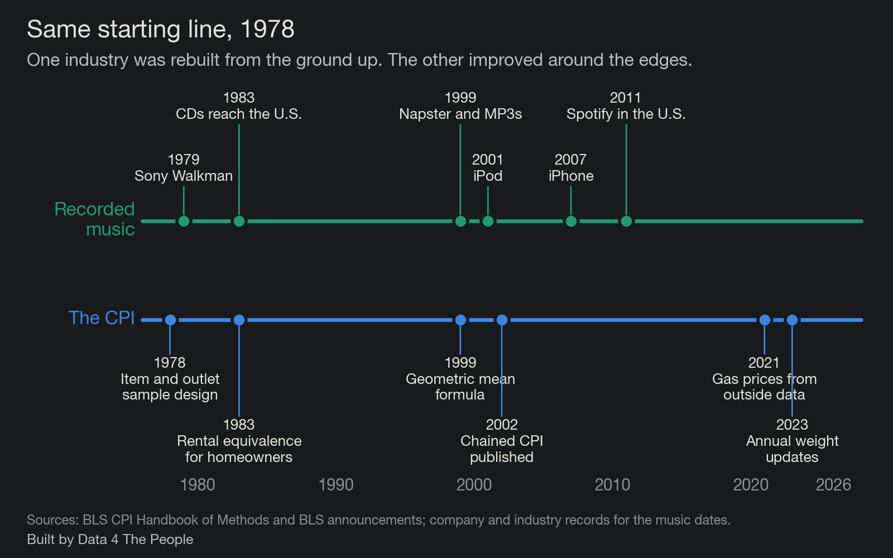
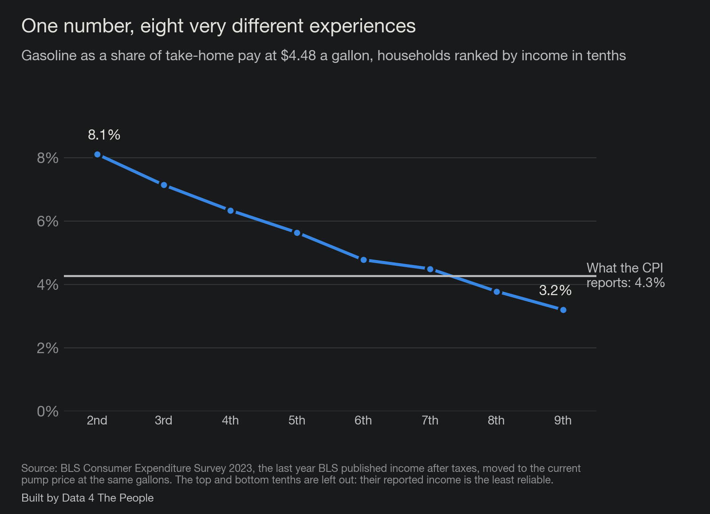
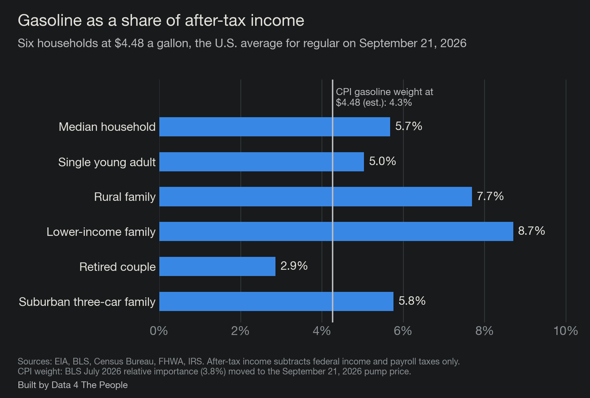
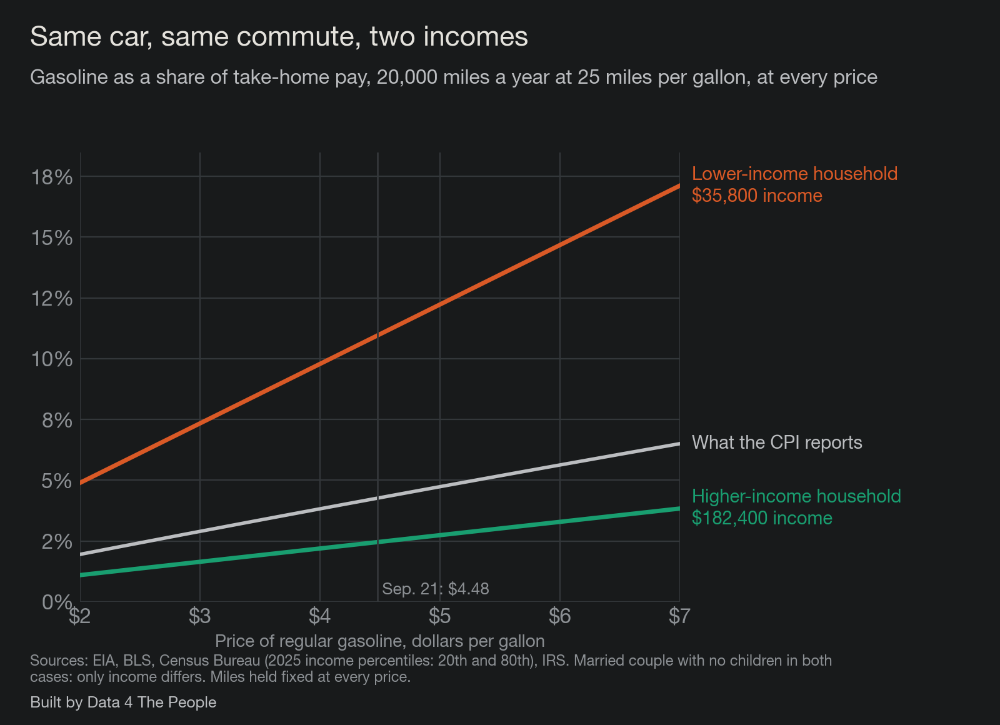
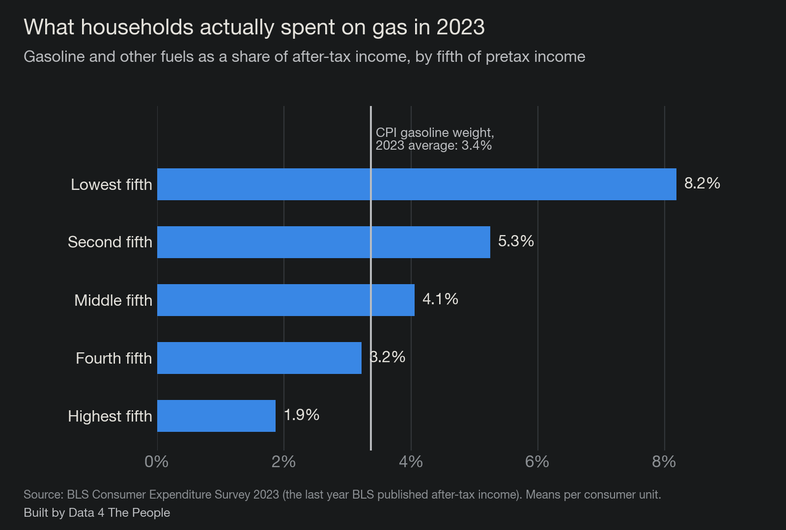
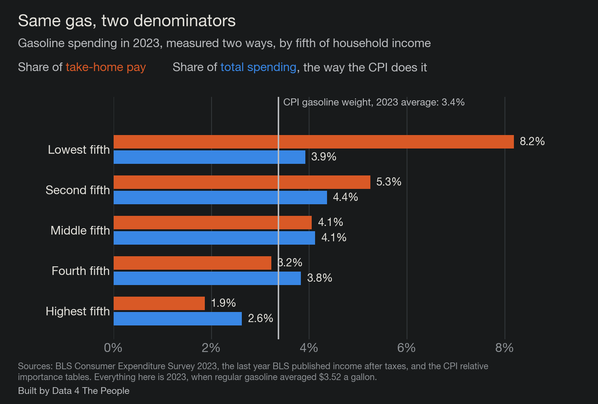

The CPI says gasoline is 4.3% of what Americans spend. For a family at the 20th percentile of income it is 8.7% of their take-home pay. Here is a tool that shows where you land.
Last month the Bureau of Labor Statistics (BLS) told us that annual inflation was 3.4%.
If you go back over the entire history of CPI (back to 1913), the average annual inflation was 3.3%.
In other words, the struggle with prices you are feeling right now is, as measured by our government—on average—what the typical American has felt over the entire recorded history of this country. It is no big deal. Your experience, if different, is not valid.
How does it feel to be told by the government that your experience of prices as you go about your day is wrong?
This is the problem. Something is not adding up here. The economic machinery of this country seems to be driven by a number that doesn't see the lives of a typical American. And CPI is just one example of this dynamic—of the structures and systems in power becoming tone deaf to the struggles of real people. Maybe this is why America is where it is now. People aren't feeling heard. What if fixing this destructive polarization started with finally seeing and hearing people, and the lives they have to live?
We're not going to fix this today. That's well beyond our pay grade. But we are going to show you why it needs to be fixed for the way we measure inflation. And we are going to show you how it can be fixed. In short, we are going to give our elected leaders the playbook for how to better measure the lived experience of the people they were elected to serve (reminder: that would be voters, not investors).
Go back to 1978. That was the year the modern CPI infrastructure was rolled out, introducing the same item and outlet sample design we use today. One year later, Sony released the Walkman, popularizing personal cassette tapes.
What do these two completely unrelated events have in common?
Well, think of what has happened since for music. Tapes were displaced by CDs, which were then displaced by MP3s (and Napster), which put a thousand songs in your pocket once the iPod arrived. And then the entire music industry was turned upside down by streaming. Unless you are an audiophile and love your records, technology begot progress, and now we carry around the entire history of all music in our pockets on demand for $12 a month.
Now, let's compare this to the enhancements to CPI over the same years. The BLS improved the surveys, introduced chained CPI, started using a geometric mean, and increased the frequency of weight changes. But the 1978 architecture remains the same.
Here are both tracks since 1978, the year the CPI's current design was put in place.

And that's the problem. One highly competitive industry was dismantled and rebuilt from the ground up by technology. The other (our government's inflation measure) is a monopoly, with no competitive forces present to force innovation. And so, it improved a bit here and there. But it remains largely stuck in the 1970s. But look at the bright side, at least CPI is better off than our poverty measure, which was developed and stuck in the 1960s (we wrote about that one here).
Either way, imagine a world where cassette tapes (and music) had the same lack of competitive forces that CPI has. We would still all have Sony Walkmans. Maybe they would be smaller and have slightly better sound quality. But we'd be stuck in the past with our cassette tapes rather than all the music the world has to offer at our fingertips.
The reason why inflation is broken is not because CPI is broken. Think of CPI as one "person" out of 342 million. It is based on a set of weights, shares of wallet, that this "person" pays for stuff. It just so happens that in July 2026, CPI spent 3.8% of its money on gasoline, and 2.6% of its money on auto insurance, and 1.0% of its money on airfares. Cool. That's CPI's experience, and I am willing to bet that it does not jibe with lots of people's experience out there.
And here's the deal. With late 1970s technology, that was the best we could do. We could put together an inordinately complex methodology to measure the experience of this one "person" as best as we could. And then we wired that one number into everything. It tells people what inflation was. It moves Social Security checks and federal retiree pensions. It adjusts tax brackets and the standard deduction. It sets the rebates drug makers owe Medicaid and Medicare when they raise prices faster than inflation. It updates the poverty guidelines that decide who qualifies for help, and the food plan behind SNAP benefits. It sets what inflation-protected savings bonds and Treasury securities pay. Outside the government, it raises union wages, commercial rents and alimony payments. And it sits on the table when the Federal Reserve decides what to do with interest rates.
A lot has changed since then regarding technology. For example, the tool I have built and am sharing with you was built in minutes using the latest technology, a day if you include all my reviews, stress testing, and writing of the post you are reading. We don't have to have one view of inflation anymore. We can quantify hundreds, thousands, or even millions of experiences of inflation. We could create an immense distribution curve of inflation as experienced by people up and down the economic spectrum and try to manage the distribution. We don't have to be beholden to error-prone single point estimates anymore (the statistical equivalent of a tape deck). We can do much better.
That distribution already exists in the data. Here is what one month of gasoline looks like when you stop averaging it into a single household.

The CPI reports 4.3%. Working up the income ladder, the share runs from 8.1% to 3.2%, crossing the CPI's number somewhere between the seventh and eighth tenths. One number is standing in for all of that.
Gasoline is the fairest test we could give the CPI, because it is the one thing in the basket the BLS measures almost perfectly.
Since June 2021, no government employee has stood at a pump writing down prices. The gasoline index is built from about 6.1 million price observations a month, gathered from roughly 91,272 stations a day, taxes included. Compare that with the rest of the index. In 2025, the BLS got a rent from fewer than half of the housing units in its sample, and housing is more than a third of the CPI. Whatever is wrong with the gasoline number, it is not the price.
So what does the CPI say gasoline costs? In July 2026, the most recent weight published, gasoline was 3.8% of consumer spending. At the price in the week of September 21, 2026, a national average of $4.48 a gallon for regular, that weight works out to about 4.3%. Call it four and a third cents of every dollar spent.
Here is what that number actually is. The BLS adds up all the gasoline bought by urban consumers and divides it by everything those consumers bought. Households with no car are in the denominator. So is a retired couple who drives to church on Sunday, my father who has put 14,000 miles on his car since 2017, and a contractor who puts 30,000 miles on a pickup. One number comes out the other end, and it belongs to nobody.
So we built the people back in.
We expect this to be the part people argue with, so let us make the case plainly.
The CPI divides gasoline spending by all other spending. We divide it by what a household brings home after federal taxes. That single choice changes the answer, and we think ours is the one that matches how people live.
Start with the obvious. Nobody pays for gas out of a share of their consumption basket. They pay out of a paycheck. When the pump costs $20 more a week, the concern is whether the paycheck covers it, not whether gasoline has grown as a fraction of everything else they bought. We would rather not build a measure that treats borrowed money like earned money.
So we use take-home pay, after federal income and payroll taxes, because it answers the question a household actually asks: can we afford this on what we earn? Every figure in this post is built that way, and we say so on every chart. There is more on the arithmetic in the questions at the end.
We took six households that the government's own data says exist. The Census Bureau gave us their incomes. The Federal Highway Administration's travel survey gave us how far each one drives and the gas mileage of the cars they own. The IRS rules gave us their federal income and payroll taxes, because people buy gas with take-home pay, not with pre-tax pay. Then we did the only arithmetic that matters to a household: gallons burned, times the price, divided by what they actually take home.
The gap shows up immediately. Five of our six households spend more of their income on gas than the CPI's 4.3%, and the ones furthest above it have the least room to absorb it.

The median American household, a married couple with two cars and $87,460 of income before tax, spends $4,240 a year on gasoline. That is $353 a month, and it is 5.7% of what they take home. A family at the 20th percentile of income, $35,800 before tax, spends less on gas in dollars, $3,726, but that is 8.7% of their take-home pay. A rural family with a car and a pickup is at 7.7%. A retired couple with one car is at 2.9%, below the CPI's number, which is its own kind of finding.
Try it yourself. The tool below has those six households and a slider for the price, and you can put in your own miles, mileage and income. Nothing you type leaves your browser. It is free to use, it works on a phone, and you can share a link to it. It runs on weekly gasoline prices from the Energy Information Administration, income from the Census Bureau, driving data from the Federal Highway Administration, and the 2026 federal tax rules.
Now the part that the single number hides completely.
A share is a snapshot. What matters when prices move is the slope: how fast your share climbs when the price at the pump climbs. Take two households that drive exactly the same way, 20,000 miles a year in a car that gets 25 miles to the gallon. One earns $35,800 before tax, the other $182,400. Put their shares next to the CPI's at every price from $2 to $7, and the three lines fan apart. Each dollar at the pump adds 2.4 points to the lower-income household's share, 0.9 points in the CPI, and 0.6 points to the higher-income household's.

Between $3 and $6 gas, the first household goes from 7.3% of its take-home pay to 14.7%, while the second moves from 1.6% to 3.3%. Same car, same commute, same pump, and the CPI's single line runs down the middle of both.
You might reasonably ask whether these households are made up. They are built from published averages, so we checked them against what people told the government they actually spent.

In 2023, the lowest fifth of households by income spent 8.2% of their take-home pay on gasoline and the top fifth spent 1.9%. Move those to today's price and the range runs from about 10.4% down to 2.4%. Our six households sit inside that range, which is validation for the simple math that runs the tool.
So here is where the case study lands, in our view. The CPI's gasoline number is not wrong. It is a correct answer to a question that is largely meaningless for you and me, which is what gasoline costs the average of all of us at once. The questions people actually ask are what gas costs their household, and what happens to them when the price jumps. The data to answer those questions already exists, and it is public. Although harder, it's likely available for all the other expense items as well. The only thing missing is the will to publish inflation as a distribution instead of a single point.
For those of you who have worked in the corporate world, you know that person (likely a supervisor) that reviews work you've done, tells you something is wrong with it, but doesn't give any ideas on how to fix it? There's always a handful lurking around.
I've always hated that person. Tell me my idea is bad—there's no problem with that. But then you better be ready to offer your idea for us to discuss. Suffice it to say, I don't want to be that person, which is why I offered an alternative to CPI in this post. Is my idea the best one? Of course not. I am a middle-aged generalist data journalist with a bunch of random life experience. I am certain that America is home to hundreds of creative PhD statistician / economists who could come up with far better ideas.
But what do we reward these more qualified people for today? To predict what the broken tape deck will say in the future. You can make a nice career out of knowing the ins and outs of how the tape deck works and having an edge on what sounds it will spit out next.
Here's my dream. One day, these brilliant people will get together and realize it's time to throw away the tape deck. And then they will pull up a whiteboard and redesign how we measure inflation for the streaming age. The redesign will start with one guiding mission. Does this process capture the lived experience of the people it is designed to measure? And they will build it.
Maybe you think this dream is impossible. That says something, because with the technology we have it could be unbelievably easy to build. The impossible part may be to just get people to accept that the world has changed and realize that we need to adapt to better measure it.
I don't have any power here beyond this report. All I can do is share data and send my dream out into the world. But who knows how things will play out? Maybe, with your help, one day it could come true.
Because spending can run well above income. In 2024 the lowest fifth of households reported $16,658 of income before taxes and $35,046 of spending. That gap gets filled somehow: savings drawn down, a retirement account tapped, family help, assistance the survey does not count as income, and for some households, credit. All of it lands in the denominator, which makes every item look like a smaller slice of life at exactly the income level with the least room to absorb it. Measured against what they earn, the picture changes.

Everything in this chart is 2023, the last year the BLS published income after taxes, when regular gasoline averaged $3.52 a gallon rather than today's $4.48. The CPI's gasoline weight averaged 3.4% across that year, so read these numbers against that line and not against the 4.3% used earlier in this post.
For the middle fifth of households the two measures give the same answer, 4.1%. For the lowest fifth, gasoline is 3.9% of spending and 8.2% of take-home pay. For the highest fifth it runs the other way, 2.6% of spending and 1.9% of take-home pay. The denominator decides which story gets told.
It averages the spending, not the people. When you add up all the gasoline everyone bought and divide by everything everyone bought, households that spend more count for more. Economists call this a plutocratic index, which is a description of the arithmetic rather than an insult. In 2024 the top fifth of households spent about $150,000 and the bottom fifth about $35,000, so the habits of the top pull the average toward themselves.
Weight each household equally instead and gasoline's share of spending in 2024 comes out at 3.6% rather than 3.4%. That gap is small for one item, and it leans the same way for every item where lower-income households buy more than their share of the total.
No. As a measure of what a fixed basket of goods costs from month to month, it is careful work, and gasoline is among the best-measured items in it. Other items are built in stranger ways, and we have written about two of them: how the CPI handles health insurance and how grocery shelf prices compare with the CPI's food basket. Our argument is about what the single-point estimate is used for. It sets Social Security raises, tax brackets and drug rebates, all of which land on paychecks, and a spending-weighted average cannot tell you what is happening to any particular paycheck.
Because state income taxes vary by where you live, and adding them would mean picking a state for every household. Leaving them out makes take-home pay higher than it really is for most people, which makes every share in this post smaller than it really is. The direction of that error runs against our own argument, which is how we prefer it.
Every number above is recomputed from published data each time we rebuild the page.
Built by Data 4 The People. The interactive tool is at data4thepeople.github.io/GasolineCost, and the data and code behind every number are at github.com/Data4ThePeople/GasolineCost.